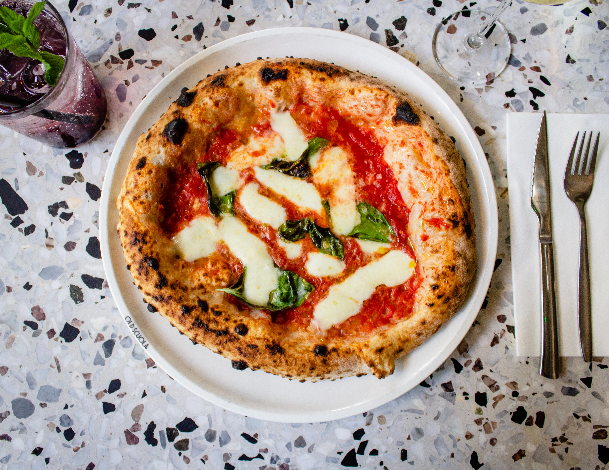

Pizza Speciale di Simone
Classica pizza margherita ma con sugo leggermente piccante.
Ingredienti:
Ricetta:
- Per preparare la pasta per la pizza abbiamo scelto di impastare il tutto a mano, ma se preferite utilizzare l'impastatrice potrete seguire gli stessi procedimenti,
utilizzando il gancio a velocità medio bassa. Come prima cosa versate le due farine in una ciotola,
sbriciolate il lievito all'interno e versate l'acqua poco per volta.
La temperatura ideale dell'acqua è di 25°.
- Mescolate man mano con un mestolo di legno e quando avrete aggiunto quasi tutta l'acqua aggiungete anche il sale.
Continuate ad aggiungere l'acqua iniziando ad impastare con le mani, per amalgamare gli ingredienti.
- Infine trasferite l'impasto sul piano da lavoro e lavoratelo con le mani fino a che non sarà liscio e omogeneo.
A questo punto lasciatelo riposare sul piano di lavoro per una decina di minuti coprendolo con la ciotola.
Una volta riposato dategli una piccola piega: immaginate che la sfera sia divisa in 4 parti, prendete l'estremità di ognuna, tiratela delicatamente e ripiegatela verso il centro.
- Una volta fatte le 4 pieghe rigirandolo su se stesso dategli la forma di una sfera.
Trasferite l'impasto così formato in una ciotola, coprite con pellicola trasparente e lasciate lievitare.
Per comodità potete mettere la ciotola in forno spento ma con la luce accesa, così l'interno raggiungerà la temperatura di 26-28°, ideale per la lievitazione;
in alternativa potete anche tenere la bacinella in un luogo caldo. I tempi sono approssimativi poiché ogni impasto, la temperatura e le condizioni metereologiche influenzano la lievitazione: mediamente l'impasto dovrebbe impiegare 6 ore a raddoppiare di volume.
- Trascorso il tempo della lievitazione, l'impasto sarà bello gonfio, quindi trasferitelo sul piano da lavoro e dividetelo con un tarocco in 3 pezzi da 265 g.
Se dovesse servirvi, potete infarinare leggermente il piano di lavoro. Ora prendete ciascuna porzione e come fatto prima sollevate un lembo di pasta e portatelo verso l'interno.
Ripetete la stessa operazione per gli altri 3 lembi di pasta.
- Capovolgete l'impasto e procedete con la pirlatura: pirlare l'impasto significa farlo girare con le mani sul ripiano di lavoro portandolo verso di voi e poi allontanandolo ripetutamente fino ad ottenere una sfera liscia e regolare.
Trasferite man mano i panetti in una cassetta per pizza precedentemente unta e coprite con il suo coperchio.
- Lasciateli riposare per altri 30 minuti. Nel frattempo posizionate nel forno la pietra refrattaria, sistematela in alto.
Accendete il forno portando la temperatura a 250° e azionando la modalità statica. Ora utilizzando un tarocco sollevate delicatamente il primo panetto.
Trasferitelo su un piano con abbondante semola e aggiungete ancora un po' di semola in superficie. Con la punta delle dita schiacciate il panetto al centro.
- Continuate in questo modo facendo un movimento rotatorio in modo da allargare l'impasto.
Non schiacciate mai i bordi, e proseguite sino ad ottenere un disco da 28 cm. Trasferite l'impasto sulla pala, avendo cura di non rovinarlo.
- Ora aiutandovi con un cucchiaio stendete la passata di pomodoro sulla pizza, lasciando un bordo libero.
Infornate, facendo scivolare delicatamente la pizza sulla pietra refrattaria e lasciate cuocere per circa 6 minuti.
Nel frattempo tagliate la mozzarella a bastoncini o sfilacciatela con le mani. Poitete strizzarla delicatamente in modo che non rilasci troppa acqua in cottura.
Trascorsi i 6 minuti, sempre utilizzando la pala sfornate la pizza.
- Sistemate sopra i bastoncini di mozzarella e infornatela per altri 6 minuti circa.
Quando sarà ben dorata sfornatela, aggiungete le foglie di basilico, se gradite un filo d'olio e servite.
Preparate così anche le altre due pizze e gustatele calde.
Tabella nutrizionale
| Calorie |
Grassi |
Carboidrati |
Proteine |
| 813 kcal |
18 g |
156 g |
14 g |
Back